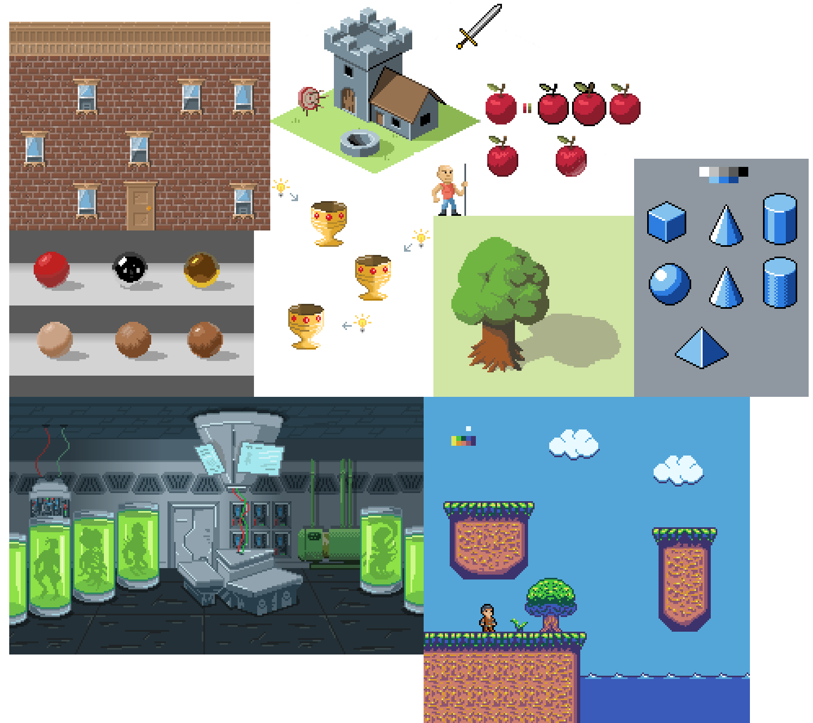

I decided to add diversity in everyday developers' life and last month I started to learn a new thing - pixel art. It was long waiting goal, but finally I found time to invest in it (thanks you to all lockdowns, I guess).
I don't have well-defined goal or plan for this. I have some raw ideas in mind, will work on them in the upcoming months Meanwhile, it brings me joy, and I will stick with it for a while.
By the way if you're interested I started to learn with this two courses:
Not sure which one is better, check out both of them :)
